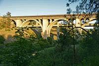
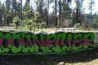
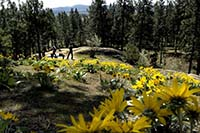

Located below the Sunset Bridge near Browne's Addition, Highbridge is not hard to find once you realize it's there. This course is heavily wooded, with a fair amount of elevation change. Most baskets alternate between two locations.
Downriver DG Course

The Downriver course runs along the Spokane River, right next to Downriver Ball Golf Course. Although only moderately hilly and tree-covered, the constant threat of the water necessitates a cautious play style on some holes.
Sekani Park Jamboree

Just north of the River, off Upriver Drive near Beacon Hill lies perhaps the most unique course in Spokane. Moderate tree-coverage, novel basket placements and a lot of elevation change make Sekani a fun, but challenging course.